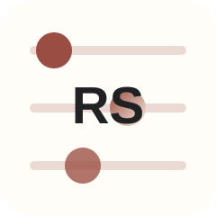
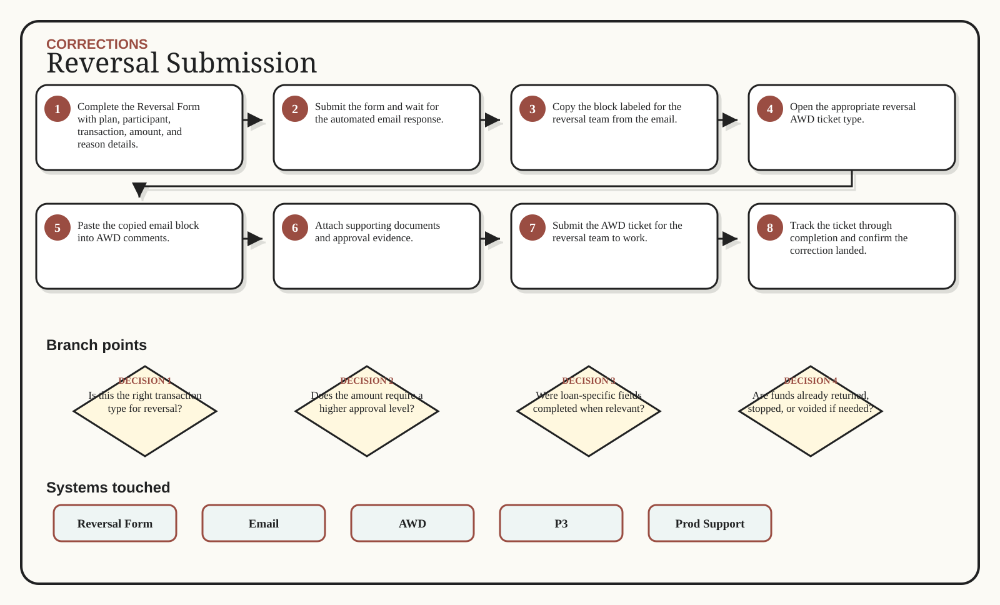

Reversal Submission
Use the new form-first reversal path before opening AWD.

Multi-branch visual route

Decisions that change the route
Is this the right transaction type for reversal?
Does the amount require a higher approval level?
Were loan-specific fields completed when relevant?
Are funds already returned, stopped, or voided if needed?
Is the automated email block in AWD comments?
Inputs -> action -> output
Reversal Form
Automated form email
Transaction reference numbers
Loan numbers when applicable
Complete the Reversal Form with plan, participant, transaction, amount, and reason details.
Submit the form and wait for the automated email response.
Copy the block labeled for the reversal team from the email.
Open the appropriate reversal AWD ticket type.
Submitted Reversal Form
Automated email evidence
AWD reversal ticket
Approval evidence